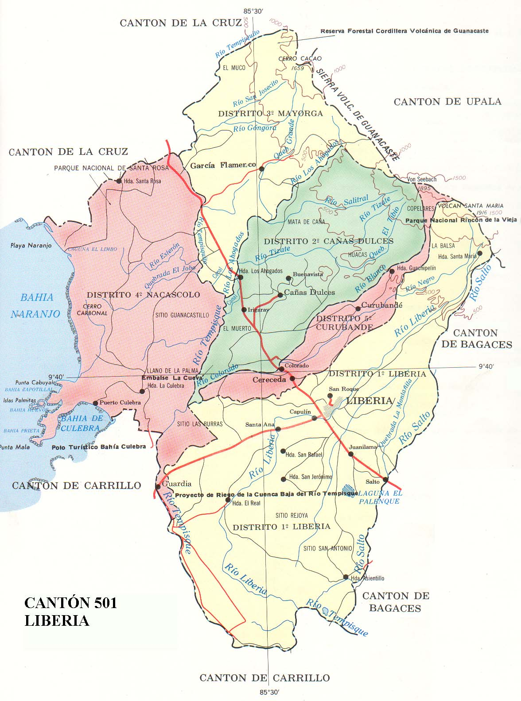
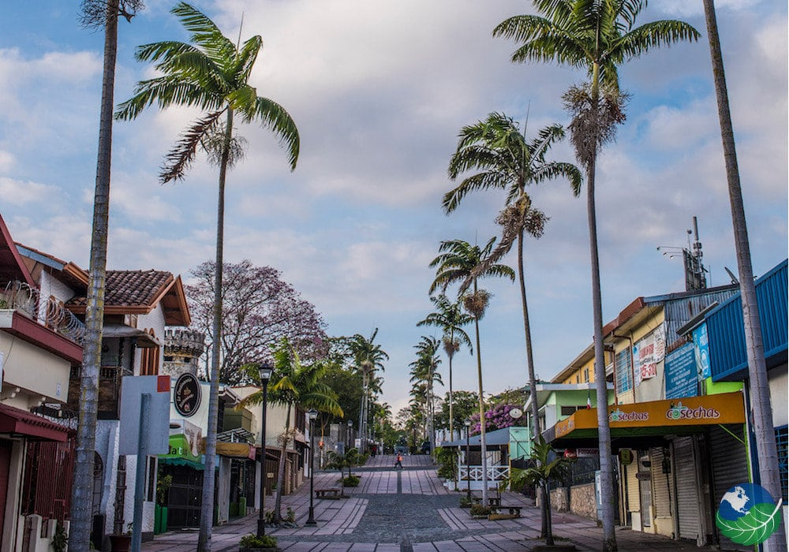

Curso: Sistemas de Información Geográfica
Estudiantes:
Jennifer Alvarado Brenes - 2020124171
Hector Guillén Ramírez - 2019047572
Proyecto 3 - Cantón de Liberia
El cantón de Liberia también está ubicado en la provincia de Guanacaste, Costa Rica. Es conocido como "La Ciudad Blanca" debido a la arquitectura colonial de muchas de sus estructuras. Algunos puntos destacados de Liberia incluyen el Parque Nacional Rincón de la Vieja, que ofrece senderos, aguas termales y actividades al aire libre.
Liberia es un importante centro de transporte y puerta de entrada a las playas y parques nacionales de la región. El Aeropuerto Internacional Daniel Oduber Quirós, ubicado en Liberia, facilita el acceso a la zona y ha contribuido al crecimiento del turismo en Guanacaste.
La ciudad también alberga la Iglesia de la Ermita y la Iglesia de Guadalupe, que son lugares de interés histórico y arquitectónico. La cultura y la historia de Liberia se entrelazan con la rica herencia de Guanacaste, y la ciudad es un punto de partida ideal para explorar la belleza natural de la provincia.
